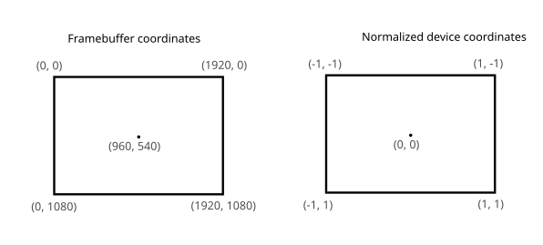
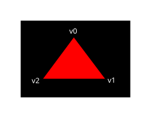
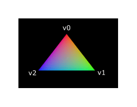

Shader modules
Unlike earlier APIs, shader code in Vulkan has to be specified in a bytecode format as opposed to human-readable syntax like GLSL Slang, and HLSL. This bytecode format is called SPIR-V and is designed to be used with Vulkan (a Khronos API). It is a format that can be used to write graphics and compute shaders, but we will focus on shaders used in Vulkan’s graphics pipelines in this tutorial.
The advantage of using a bytecode format is that the compilers written by GPU vendors to turn shader code into native code are significantly less complex. The past has shown that with human-readable syntax like GLSL, some GPU vendors were rather flexible with their interpretation of the standard. If you happen to write non-trivial shaders with a GPU from one of these vendors, then you’d risk another vendor’s drivers rejecting your code due to syntax errors, or worse, your shader running differently because of compiler bugs. With a straightforward bytecode format like SPIR-V that will hopefully be avoided.
However, that does not mean that we need to write this bytecode by hand. Khronos
has released their own vendor-independent compiler that compiles Slang to
SPIR-V. This compiler is designed to verify that your shader code is fully
standards compliant and produces one SPIR-V binary that you can ship with your program.
You can also include this compiler as a library to produce SPIR-V at runtime,
but we won’t be doing that in this tutorial, until we get into reflection
sometime in a future chapter. Although we can use this
compiler directly via slangc, we will be using slangc in our cmake build
process instead.
Slang is a shading language with a C-style syntax. Programs written in it have a
main entry point which is invoked for every object. Like HLSL, Slang uses
parameters and return values for input and output with annotations to help
describe what those variables relate to. The language includes many features
to aid in graphics programming, like built-in vector and matrix primitives.
Functions for operations like cross-products, matrix-vector products, auto
differentiation for AI, and reflections around a vector are included.
The vector type is called float with a number indicating the number of elements.
For example, a 3D position would be stored in a float3.
It is possible to access single components through members like .x called
the swizzle operator, but it’s also possible to create a new vector from
multiple components at the same time. For example, the expression
float3(1.0,2.0, 3.0).xy would result in float2. The
constructors of vectors can also take combinations of vector objects and scalar
values. For example, a float3 can be constructed with
float3(float2(1.0, 2.0), 3.0).
As the previous chapter mentioned, we need to write a vertex shader and a fragment shader to get a triangle on the screen. The next two sections will cover the Slang code those, and after that I’ll show you how to produce one SPIR-V binaries and load it into the program.
Vertex shader
The vertex shader processes each incoming vertex. It takes its attributes, like world position, color, normal and texture coordinates as input. The output is the final position in clip coordinates and the attributes that need to be passed on to the fragment shader, like color and texture coordinates. These values will then be interpolated over the fragments by the rasterizer to produce a smooth gradient.
A clip coordinate is a four-dimensional vector from the vertex shader that is subsequently turned into a normalized device coordinate by dividing the whole vector by its last component. These normalized device coordinates are homogeneous coordinates that map the framebuffer to a [-1, 1] by [-1, 1] coordinate system that looks like the following:

You should already be familiar with these if you have dabbled in computer graphics before. If you have used OpenGL before, then you’ll notice that the sign of the Y coordinates is now flipped. The Z coordinate now uses the same range as it does in Direct3D, from 0 to 1.
For our first triangle we won’t be applying any transformations, we’ll just specify the positions of the three vertices directly as normalized device coordinates to create the following shape:

We can directly output normalized device coordinates by outputting them as clip
coordinates from the vertex shader with the last component set to 1. That way,
the division to transform clip coordinates to normalized device coordinates will
not change anything.
Normally these coordinates would be stored in a vertex buffer, but creating a vertex buffer in Vulkan and filling it with data is not trivial. Therefore, I’ve decided to postpone that until after we’ve had the satisfaction of seeing a triangle pop up on the screen. We’re going to do something a little unorthodox in the meanwhile: include the coordinates directly inside the vertex shader. The code looks like this:
static float2 positions[3] = float2[](
float2(0.0, -0.5),
float2(0.5, 0.5),
float2(-0.5, 0.5)
);
struct VertexOutput {
float4 sv_position : SV_Position;
};
[shader("vertex")]
VertexOutput vertMain(uint vid : SV_VertexID) {
VertexOutput output;
output.sv_position = float4(positions[vid], 0.0, 1.0);
return output;
}The vertMain function is invoked for every vertex. The built-in SV_VertexID
annotated variable in the parameters contains the index of the current vertex.
This is usually an index into the vertex buffer, but in our case, it will be
an index into a hardcoded array of vertex data. The position of each vertex
is accessed from the constant array in the shader and combined with dummy
z and w components to produce a position in clip coordinates. The
built-in annotation SV_Position marks the output in the VertexOutput struct.
Something worth mentioning if you’re familiar with other shading languages
like GLSL or HLSL, there are no instructions for bindings. This is a feature
of Slang. Slang is designed to automatically infer the bindings by the
order of declaration. The struct for positions is a static to inform the
compiler that we don’t need any bindings in our shader.
Studious observers will notice that we’re calling our main function
vertMain instead of main, this is because Slang and SPIR-V both support
having multiple entry points in one file. This is important when you’re
dealing with pipelines which have more than just a single vert/frag shader
combo. Ray-tracing for instance, for even simple demos would have four or
more shaders all small yet needing their own file which can become cumbersome.
Another major feature of Slang is the ability to create shader libraries
or modules; an exercise left to the reader is to explore more about this
feature rich shading language.
In this tutorial, we’re going to demonstrate best practices by keeping the shaders to a single file. If you know GLSL, there’s GLSL versions of the shaders in the attachments folder which are direct translations.
Fragment shader
The triangle formed by the positions from the vertex shader fills an area on the screen with fragments. The fragment shader is invoked on these fragments to produce a color and depth for the framebuffer (or framebuffers). A simple fragment shader that outputs the color red for the entire triangle looks like this:
[shader("fragment")]
float4 fragMain() : SV_Target
{
return float4(1.0, 0.0, 0.0, 1.0);
}The fragMain entry point function is called for every fragment just like the
vertex shader vertMain function is called for every vertex. Colors in Slang
are 4-component vectors with the R, G, B and alpha channels within the [0, 1] ranges. Unlike
SV_Position in the vertex shader, there is no built-in variable to output a
color for the current fragment. You have to specify your own output variable for
each framebuffer where the SV_TARGET annotation specifies the index
of the framebuffer. The color red is written to this outColor variable that is
linked to the first (and only) framebuffer at index 0.
Per-vertex colors
Making the entire triangle red is not very interesting, wouldn’t something like the following look a lot nicer?

We have to make a couple of changes to both shaders to achieve this. First off, we need to specify a distinct color for each of the three vertices. The vertex shader should now include an array with colors just like it does for positions:
static float3 colors[3] = float3[](
float3(1.0, 0.0, 0.0),
float3(0.0, 1.0, 0.0),
float3(0.0, 0.0, 1.0)
);Now we just need to pass these per-vertex colors to the fragment shader so it
can output their interpolated values to the framebuffer. Add an output for color
to the vertex shader and write to it in the vertMain function:
struct VertexOutput {
float3 color;
float4 sv_position : SV_Position;
};
[shader("vertex")]
VertexOutput vertMain(uint vid : SV_VertexID) {
VertexOutput output;
output.sv_position = float4(positions[vid], 0.0, 1.0);
output.color = colors[vid];
return output;
}Next, we need to add a matching parameter in the fragment shader:
[shader("fragment")]
float4 fragMain(VertexOutput inVert) : SV_Target
{
float3 color = inVert.color;
return float4(color, 1.0);
}The input variable does not necessarily have to use the same name, however,
if they are in the same file, it really is convenient to not repeat ourselves.
But either way, they will be linked together using the indexes specified by
the location directives. The fragMain function has been modified to output
the color along with an alpha value. As shown in the image above, the values
for fragColor will be automatically interpolated for the fragments between
the three vertices, resulting in a smooth gradient.
Compiling the shaders
Create a directory called shaders in the root directory of your project and
store the shaders in a file called shader.slang
The contents of shader.slang should be:
static float2 positions[3] = float2[](
float2(0.0, -0.5),
float2(0.5, 0.5),
float2(-0.5, 0.5)
);
static float3 colors[3] = float3[](
float3(1.0, 0.0, 0.0),
float3(0.0, 1.0, 0.0),
float3(0.0, 0.0, 1.0)
);
struct VertexOutput {
float3 color;
float4 sv_position : SV_Position;
};
[shader("vertex")]
VertexOutput vertMain(uint vid : SV_VertexID) {
VertexOutput output;
output.sv_position = float4(positions[vid], 0.0, 1.0);
output.color = colors[vid];
return output;
}
[shader("fragment")]
float4 fragMain(VertexOutput inVert) : SV_Target
{
float3 color = inVert.color;
return float4(color, 1.0);
}We’re now going to compile these into SPIR-V bytecode using the
slangc program.
Windows
Create a compile.bat file with the following contents:
C:/VulkanSDK/x.x.x.x/bin/slangc.exe shader.slang -target spirv -profile spirv_1_4 -emit-spirv-directly -fvk-use-entrypoint-name -entry vertMain -entry fragMain -o slang.spvReplace the path to slangc.exe with the path to where you installed
the Vulkan SDK. Double-click the file to run it.
Linux
Create a compile.sh file with the following contents:
/home/user/VulkanSDK/x.x.x.x/x86_64/bin/slangc shader.slang -target spirv -profile spirv_1_4 -emit-spirv-directly -fvk-use-entrypoint-name -entry vertMain -entry fragMain -o slang.spvReplace the path to slangc with the path to where you installed the
Vulkan SDK. Make the script executable with chmod +x compile.sh and run it.
End of platform-specific instructions
These two commands tell the compiler to read the Slang source file and output a
SPIR-V 1.4 bytecode file directly using the -o (output) flag.
Note: At the time of writing SlangC will natively support SPIR-V 1.3 and above without needing to go through emitting GLSL to get to SPIR-V. While everything in this tutorial could work in SPIR-V 1.0, it would require us to break the Slang shaders up into multiple files which begs the question, what’s the point? Plus, SPIR-V 1.4 starting from 1.4 means you’ll be familiar with the latest the standard has to offer rather than starting from an older version.
If your shader contains a syntax error, then the compiler will tell you the line number and problem, as you would expect. Try leaving out a semicolon, for example, and run the compiler script again. Also try running the compiler without any arguments to see what kinds of flags it supports. It can, for example, also output the bytecode into a human-readable format, so you can see exactly what your shader is doing and any optimizations that have been applied at this stage.
Compiling shaders on the commandline is one of the most straightforward options, yet the best path and one we use in this tutorial is to create a CMake function:
function (add_slang_shader_target TARGET)
cmake_parse_arguments ("SHADER" "" "" "SOURCES" ${ARGN})
set (SHADERS_DIR ${CMAKE_CURRENT_LIST_DIR}/shaders)
set (ENTRY_POINTS -entry vertMain -entry fragMain)
add_custom_command (
OUTPUT ${SHADERS_DIR}
COMMAND ${CMAKE_COMMAND} -E make_directory ${SHADERS_DIR}
)
add_custom_command (
OUTPUT ${SHADERS_DIR}/slang.spv
COMMAND ${SLANGC_EXECUTABLE} ${SHADER_SOURCES} -target spirv -profile spirv_1_4 -emit-spirv-directly -fvk-use-entrypoint-name ${ENTRY_POINTS} -o slang.spv
WORKING_DIRECTORY ${SHADERS_DIR}
DEPENDS ${SHADERS_DIR} ${SHADER_SOURCES}
COMMENT "Compiling Slang Shaders"
VERBATIM
)
add_custom_target (${TARGET} DEPENDS ${SHADERS_DIR}/slang.spv)
endfunction()Then you can add the Slang build step to your target like this:
add_slang_shader_target( foo SOURCES ${SHADER_SLANG_SOURCES})
add_dependencies(bar foo)Loading a shader
Now that we have a way of producing SPIR-V shaders, it’s time to load them into our program to plug them into the graphics pipeline at some point. We’ll first write a simple helper function to load the binary data from the files.
#include <fstream>
...
static std::vector<char> readFile(const std::string& filename) {
std::ifstream file(filename, std::ios::ate | std::ios::binary);
if (!file.is_open()) {
throw std::runtime_error("failed to open file!");
}
}The readFile function will read all the bytes from the specified file and
return them in a byte array managed by std::vector. We start by opening the
file with two flags:
-
ate: Start reading at the end of the file -
binary: Read the file as a binary file (avoid text transformations)
The advantage of starting to read at the end of the file is that we can use the read position to determine the size of the file and allocate a buffer:
std::vector<char> buffer(file.tellg());After that, we can seek back to the beginning of the file and read all the bytes at once:
file.seekg(0, std::ios::beg);
file.read(buffer.data(), static_cast<std::streamsize>(buffer.size()));And finally, close the file and return the bytes:
file.close();
return buffer;We’ll now call this function from createGraphicsPipeline to load the bytecode
of the two shaders:
void createGraphicsPipeline() {
auto shaderCode = readFile("shaders/slang.spv");
}Make sure that the shaders are loaded correctly by printing the size of the buffers and checking if they match the actual file size in bytes. Note that the code doesn’t need to be null terminated since it’s binary code, and we will later be explicit about its size.
Creating shader modules
Before we can pass the code to the pipeline, we have to wrap it in a
vk::raii::ShaderModule object. Let’s create a helper function createShaderModule to
do that.
[[nodiscard]] vk::raii::ShaderModule createShaderModule(const std::vector<char>& code) const
{
}The function will take a buffer with the bytecode as parameter and create a
vk::raii::ShaderModule from it.
Creating a shader module is straightforward, we only need to specify a pointer to the
buffer with the bytecode and the length of it. This information is specified in
a vk::ShaderModuleCreateInfo structure. The one catch is that the size of the
bytecode is specified in bytes, but the bytecode pointer is a uint32_t pointer
rather than a char pointer. Therefore, we will need to cast the pointer with
reinterpret_cast as shown below. When you perform a cast like this, you also
need to ensure that the data satisfies the alignment requirements of uint32_t.
Lucky for us, the data is stored in an std::vector where the default allocator
already ensures that the data satisfies the worst case alignment requirements.
vk::ShaderModuleCreateInfo createInfo{ .codeSize = code.size() * sizeof(char), .pCode = reinterpret_cast<const uint32_t*>(code.data()) };The vk::raii::ShaderModule can then be created by its constructor:
vk::raii::ShaderModule shaderModule{ device, createInfo };The parameters are the same as those in previous object creation functions: the logical device and a reference to the create info structure. The buffer with the code can be freed immediately after creating the shader module. Remember to return the created shader module:
return shaderModule;Shader modules are just a thin wrapper around the shader bytecode that we’ve previously loaded from a file and the functions defined in it.
The compilation and linking of the SPIR-V bytecode to machine code for execution by the GPU doesn’t happen until the graphics pipeline is created.
That means that we’re allowed to destroy the shader modules again as soon as pipeline creation is finished, which is why we’ll make them local variables in the createGraphicsPipeline function instead of class members:
void createGraphicsPipeline() {
vk::raii::ShaderModule shaderModule = createShaderModule(readFile("shaders/slang.spv"));Shader stage creation
To actually use the shaders, we’ll need to assign them to a specific
pipeline stage through vk::PipelineShaderStageCreateInfo structures as part
of the actual pipeline creation process.
We’ll start by filling in the structure for the vertex shader, again in the
createGraphicsPipeline function.
vk::PipelineShaderStageCreateInfo vertShaderStageInfo{ .stage = vk::ShaderStageFlagBits::eVertex, .module = shaderModule, .pName = "vertMain" };The first parameter is the stage that we’re operating in. The next two parameters specify the shader module containing the code, and the function to invoke, known as the entrypoint. That means that it’s possible to combine multiple fragment shaders into a single shader module and use different entry points to differentiate between their behaviors.
There is one more (optional) member, pSpecializationInfo, which we won’t
be using here, but is worth discussing. It allows you to specify values for
shader constants. You can use a single shader module where its behavior can
be configured in pipeline creation by specifying different values for the
constants used in it.
This is more efficient than configuring the shader using variables at render
time, because the compiler can do optimizations like eliminating if
statements that depend on these values.
If you don’t have any constants like that, then you can set the member to
nullptr, which our struct initialization does automatically.
Modifying the structure to suit the fragment shader is easy:
vk::PipelineShaderStageCreateInfo fragShaderStageInfo{ .stage = vk::ShaderStageFlagBits::eFragment, .module = shaderModule, .pName = "fragMain" };Finish by defining an array that contains these two structs, which we’ll later use to reference them in the actual pipeline creation step.
vk::PipelineShaderStageCreateInfo shaderStages[] = {vertShaderStageInfo, fragShaderStageInfo};That’s all there is describing the programmable stages of the pipeline. In the next chapter, we’ll look at the fixed-function stages.